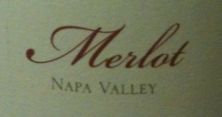

|
North America >
USA >
California >
Napa >
Napa Valley >
White Oak Vineyards & Winery >
Merlot Napa Valley

2005 Merlot Napa Valley
White Oak Vineyards & Winery
Healdsburg, CA
100% Merlot (clones 1 & 181) aged 18 months in French & Hungarian oak (50% new).
3120 cases produced.
Price: $26
14.3% alcohol
750 ml

2010 tasting - A dark, cloudy red with an oaky, berry flavor, this Merlot has a dry flavor with a strong sense of the Napa Valley
terroir. The finish is tart with a strong grapeskin aftertaste.
More about Merlot.
|